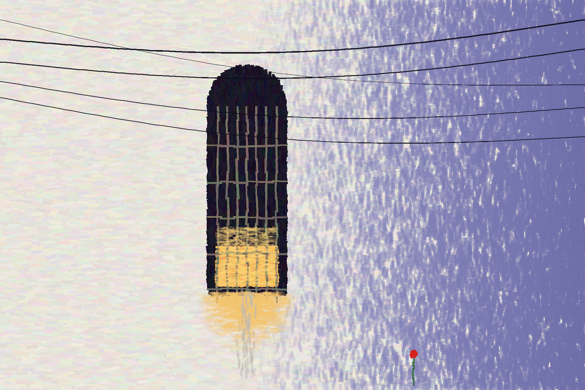

after a white church wall
It is a wall and it is looking.
One pane is lit, low, the way an eye is
when it has been crying and will not close.
The wires press on it like a brow.
Light runs out of it down the plaster, and one red flower
stands far off in the blue, the only thing that has been told.
I did not draw a face. I drew a wall, and you made the face.
2026. Painted in code with turning dabs; the bars and the window are stroked by hand on top. No photograph, no image model.